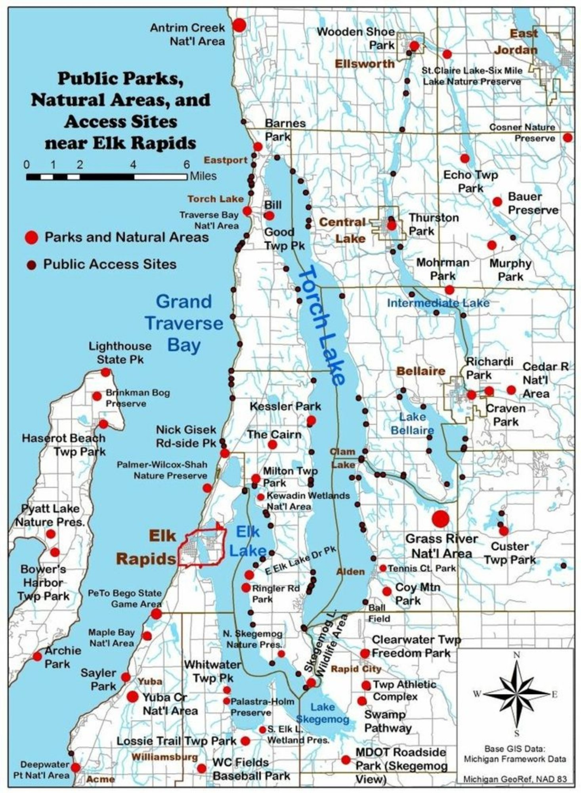

Public Parks, Natural Areas & Access Sites · Antrim County, Michigan · Michigan GeoRef
Your base camp for Northern Michigan.
The Tara sits at the heart of one of Michigan's most park-rich regions. The Intermediate River — your private dock — connects to Lake Bellaire, then Torch Lake, then the entire Chain of Lakes. On land, trails, preserves, and natural areas ring the area in every direction.
By the numbers
From your dock
Your private dock on the Intermediate River gives you direct water access to Lake Bellaire, then by boat to Torch Lake and the Clam River chain — one of the most beautiful freshwater systems in the Midwest. Kayaks and paddleboards included. Pontoon available to rent.
Highlights by Category
Lakes, Rivers & Sandbar Access
- Intermediate River — your dock (steps)
- Lake Bellaire public access · 3 min
- Torch Lake sandbar · 10 min by boat
- Grass River Natural Area · 10 min
- Clam Lake water access · 15 min
- Elk Lake · 20 min
- Grand Traverse Bay · 25 min
Hiking, MTB & Nordic Trails
- Glacial Hills Pathway — 31mi · 15 min
- Cedar River Natural Area · 15 min
- Grass River boardwalk trail · 10 min
- Antrim Creek Natural Area · 20 min
- Kewadin Wetlands Natural Area · 20 min
- Shanty Creek Nordic trails · 12 min
- N. Skegemog Nature Preserve · 25 min
Protected Lands & Wildlife
- Grass River Natural Area
- Bauer Preserve
- Craven Park
- Richardi Park
- Custer Township Park
- Clearwater Township Freedom Park
- Palastra-Holm Preserve
Beyond Bellaire
- Traverse City & wineries · 45 min
- Charlevoix · 30 min
- Lighthouse State Park · 30 min
- Petoskey & Lake Michigan · 45 min
- Haserot Beach Township Park · 30 min
- Bower's Harbor Township Park · 35 min
- Mackinac Island ferry · 90 min
Take the map with you.
Print this page for a full-size parks reference to use during your stay. We keep a copy inside The Tara as well — ask us for local recommendations anytime.
Ready to explore?
All of this starts from your private dock on the Intermediate River.
Reserve Your Week